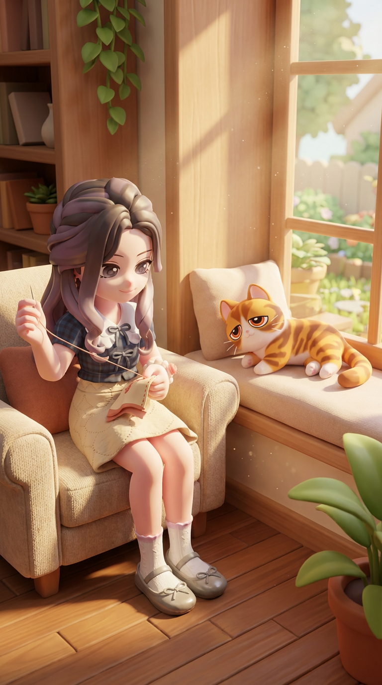
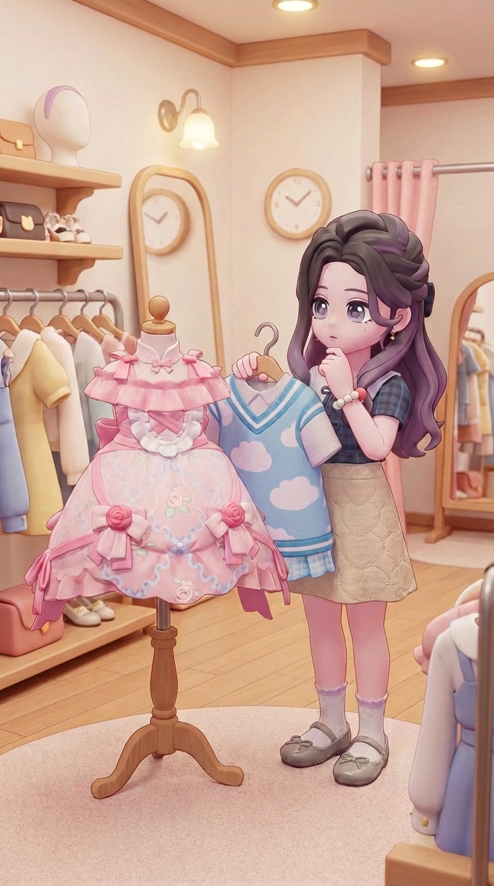

设计思路
为什么要用匠人态度改造旧衣？
做手工是当下都市年轻女性的重要解压方式之一。拼豆、缝纫、做手账、陶艺、戳毛毡……这些手工能让人在一段时间内放空自我，进入一种类似冥想的状态：无论是自己尝试，还是看别人去做，都充满了治愈感。
结合游戏：心动小镇游戏中的很多行为活动，都带有这种“放空自我”的特性；而换装又是小镇中的重要玩法之一，所以我们用一帧帧“旧衣改造”的画面带着观众放空大脑，短暂地抛弃烦恼。
主要内容
女主叫奈奈，19岁，是个温柔甜美的女大，在小镇上经营着一家不起眼的裁缝铺；她养着一只名叫“momo酱”的大橘猫（六岁半的“高龄”），慵懒臭屁，肥能压塌炕。这家裁缝铺有个奇怪的规矩：不给顾客做新衣服，但是顾客可以拿着旧衣服上门，提出各种各样的改造需求。
影片每一集的内容，都是女主在阳光下的几案上，如同修复文物一样细心、悠然地摆弄针线、剪刀，静静地将一件件或是破旧或是过时的衣服改造成客户需要的样子。在她慢悠悠的动作里，时光仿佛都被拉长了。
在这个系列的剧集中，客户很少真正现身，他们的需求通过女主在缝纫改造过程中的画外音徐徐道来。有些需求听起来稀奇古怪，但背后都包含着衣服主人与这件衣服背后的某个小故事（比如一个小朋友想要把一件自己的旧衣服改造成流浪猫挡风的猫窝，或是一个少女想要把自己的连衣裙改造成记忆中妈妈穿过的样子）。这些背后的小故事，只会在每集影片最后客户拿到衣服的时候才会揭示。
审美度 95
匠心度 98
治愈感 92
主角形象
- 姓名：奈奈（Natty）
- 年龄：19岁
- 星座：巨蟹座
- MBTI：ISFJ
- 温柔甜美的女大，话不多，但善解人意、心思细腻
- 审美超绝，手艺精湛
- 宠物：momo酱（大橘，6岁半）


宠物形象
- 名字：momo酱
- 设定：六岁半“高龄”大橘，肥能压塌炕；表面高冷臭屁，实则是店里的“招财猫”
- 外形：圆滚滚的大橘，毛量厚实，走两步就开始找阳光最好的地方躺平
- 性格：对生人翻白眼儿、对熟人摆架子；一旦决定“赏脸”，就会用肚皮和呼噜声收买人心
- 与奈奈互动：营业完回头盯着奈奈：“我这可都是为了帮你招徕顾客，还不赶紧上供小冻干”